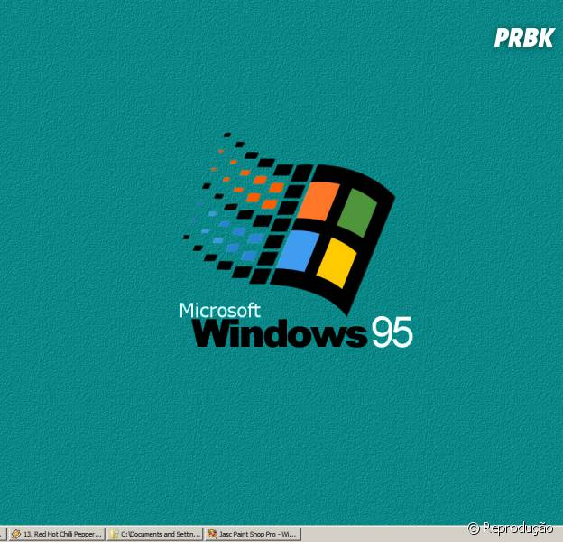

Século XX
Windows 95
O Windows 95 foi lançado no dia 24 de agosto de 1995 pela Microsoft, completando 28 anos desde o seu lançamento e com um legado que revolucionou a indústria. Ele é um dos softwares mais influentes, trazendo não apenas uma nova roupagem para o sistema operacional – porém, também diversos recursos que impactaram o mercado e são celebrados até os dias recentes. Um exemplo claro disso é que este foi o primeiro sistema deles a chegar com o Internet Explorer pré-instalado em versões que chegaram após o seu lançamento. Porém, não foi apenas este fator que o tornou uma referência que perdura até os tempos atuais. Foi nele que também pudemos ver a estreia do menu “Iniciar” e da barra de tarefas – marcas registradas que se mantém até as versões que temos hoje em dia. Outro recurso importante que o Windows 95 trouxe ao público é a possibilidade de distinção entre o MS-DOS e o Windows NT para os usuários finais. Apesar de poucas versões do sistema operacional serem produzidas com ambos, o novo kernel tomou o seu lugar para a plataforma se apoiar e segue sendo um dos principais pilares da Microsoft – obviamente, com suas devidas atualizações ao longo das décadas.
Principais Características:
- Interface Gráfica: O Windows 95 trouxe o menu Iniciar, a barra de tarefas e janelas com bordas arredondadas, tornando a navegação mais intuitiva.
- Lixeira: Um espaço para guardar arquivos removidos temporariamente.
- Multitarefa: O Windows 95 introduziu o conceito de multitarefa.
- Plug and play: Um sistema para detecção e instalação automática de dispositivos.
- Suporte a 32 bits: O Windows 95 ofereceu melhor estabilidade e suporte para aplicativos de 32 bits.
- Explorador de Arquivos: O Explorador de Arquivos tem sua origem no Windows Explorer do Windows 95.
- Discador: O discador para ligações telefônicas do Windows 95 ainda faz parte do Windows 10.
 |
 |
 |